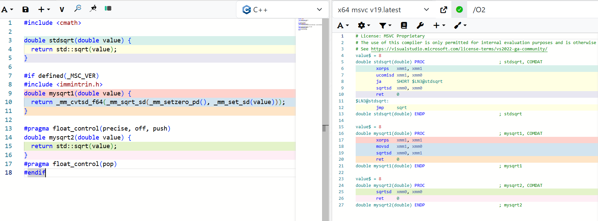

（前提）虚根のことは考えていない。
三次方程式 \(f(x)=ax^3+bx^2+cx+d\) の実根は、
\[ p=\frac{3ac-b^2}{3a^2},\qquad q=\frac{2b^3-9abc+27a^2d}{27a^3},\qquad D=\left(\frac q2\right)^2+\left(\frac p3\right)^3 \]
\[ x= \begin{cases} \displaystyle \sqrt[3]{-\frac q2+\sqrt D} +\sqrt[3]{-\frac q2-\sqrt D} -\frac{b}{3a}, & D>0, \\[1.2em] \displaystyle 2\sqrt[3]{-\frac q2}-\frac{b}{3a}, \quad -\sqrt[3]{-\frac q2}-\frac{b}{3a}, & D=0, \\[1.2em] \displaystyle 2\sqrt{-\frac p3} \cos\left( \frac13\operatorname{atan2}\left( \sqrt{-D}, -\frac q2 \right) -\frac{2\pi k}{3} \right) -\frac{b}{3a}, \quad k=0,1,2, & D<0. \end{cases} \]
として求められる。
どう考えても重そうな見た目をしている、cubic rootとかatan2とか怖いな～という印象は生まれる。
cbrtは重そうだから避けたいなとか考えると、fast inverse square rootのような方法が思い起こされる。
ニュートン法で高速にsqrtを近似することで有名なため、ニュートン法が三次方程式の高速な計算にも使えそうという発想はできる。
しかしどうやら近似アプローチでなくても、Safeguarded Newtonで高速に計算する方法がある、みたいな話を聞いた。
個人的な納得を得るために実装しておく。
三次方程式の求解とYukselの方法について触れる。
Cem Yuksel, “High-Performance Polynomial Root Finding for Graphics,” Proc. ACM Comput. Graph. Interact. Tech., 5(3), Article 27, 2022.
とりあえず三次方程式の解析解のコードをまず書いておく。 こいつよりも速く動いてくれたら嬉しい、というモチベーション。
Yukselの方法の基本的な気持ち・流れは次の雰囲気である。
1. \(f(x)\) の停留点を \(x_a, x_b\) として求める
2. 探索範囲を \(x_{min}, x_{max}\) とすると、 \([x_{min}, x_a], [x_a, x_b], [x_b, x_{max}]\) の3つの区間に分ける
3. このとき各区間は単調であることを利用し、ある一つの解をニュートン法でゴリゴリ見つける、範囲外にはみ出した場合はbisection \(x_{next}=\frac{left+right}{2}\) に切り替えて探索を進める（Safeguarded Newton）
4. 残りの解は元の式をdeflationして二次方程式にして解く
\(x_{min}, x_{max}\) は任意の範囲でかつ、この後の分岐にも多数あらわれるが、特に指定がない限り無限区間（xmin=-inf, xmax=+inf）を想定する。
下記実装では、infの時にCauchy boundを利用している。
さて、Yuskelのペーパーを読んでいて「確かにな」となるポイントは、丁寧に区間を分けしてちゃんと計算を削ろうという点にある。 例えば \(f(x)\) が単調な区間を考えると、これは、停留点 n が n<=1 のとき、または二つの停留点が xmin, xmax の外側に位置するときである。 そして単調な区間ならば、実根は一つもしくは存在しないため、safeguarded Newtonを一回呼ぶことで処理が終了する。
\(f(x)=x^3+1\)
\(f(x)=x^3-3x\)
停留点がしっかり二つあり、\(x_{a}\) と \(x_{b}\) が探索区間内にある場合は、探索区間を \([x_{min}, x_a], [x_a, x_b], [x_b, x_{max}]\) と三つに分けて考える。 ここで重要なのは、一つでも解を見つけたら、\((x-r)(ax^2+Bx+C) = 0\) とdeflationすることで、残りを二次式にして解くことができる、という点である。
Safeguarded Newtonと合わせたコードは次のようになる。 境界チェックが多すぎて気持ち悪いコードだが、解を一つ見つける＋deflationする、という流れを繰り返すだけである。
なお、\(x_{min}\) や \(x_{max}\) を設定する場合では、\([x_{min}, x_{a\ or\ b}], [x_{a\ or\ b}, x_{max}]\) のケースもあるので注意が必要である。
とりあえず実行速度を確かめてみると、なんか期待していた感じではなかった。
普通に4倍くらい遅かった。
まぁたぶん探索範囲 xmin や xmax を設定して高速だよね、みたいな話なのかな？
根がないときとかの計算省略できるとかが重要っぽいし。
一般的なケースとして使うと対して速くないのかも。
そもそも論文通りに実装していないし、実験設定も同じじゃないのでここら辺はあんまり気にしない。
| Case | ns / solve | TSC ticks | Failure |
|---|---|---|---|
| Analytical | 36.36 | 137.9 | 18.83% |
| Yuksel | 129.02 | 489.3 | 6.31% |
なお失敗率は、根の絶対値の大きさを極端に変えたケースとかを色々試した結果を大雑把に計測しているので、特に参考になる数字ではない。 例えば、根が重複していたり、非常に似ているケースの扱いがそもそも実装上テキトーなので、計測してもって感じ。 少し触れるとすると、根の絶対値が大きく異なるケースでは、analytical (44.5%) Yuksel (0.07%) だったので、Yukselはちょいrobustなのかな。
とはいえ何だか悔しいので、analyticalよりも速くなるように実装してみる。 ごちゃごちゃ試してもあんまり速くならなかったので、結局はcbrtとかを近似計算に変えて、固定回数のNewton法でrefineするだけ。 高速化とはとてもではないが言えない。
Newton法の実装は簡素化しつつ、SIMDで二つの根を同時にrefineしている。
三根あるときに一つだけ見つける処理は、\(r=\sqrt{-p/3}\)、\(t=|q/2|/r^3\) として、\(z^3-3z-2t=0\) の解を5次多項式で近似し、Newton法で1回補正する。
| Case | ns / solve | TSC ticks | Failure |
|---|---|---|---|
| Analytical | 36.36 | 137.9 | 18.83% |
| Yuksel | 129.02 | 489.3 | 6.31% |
| Mixed | 33.28 | 126.2 | 7.15% |

まぁこんなこともあるか～という週末。